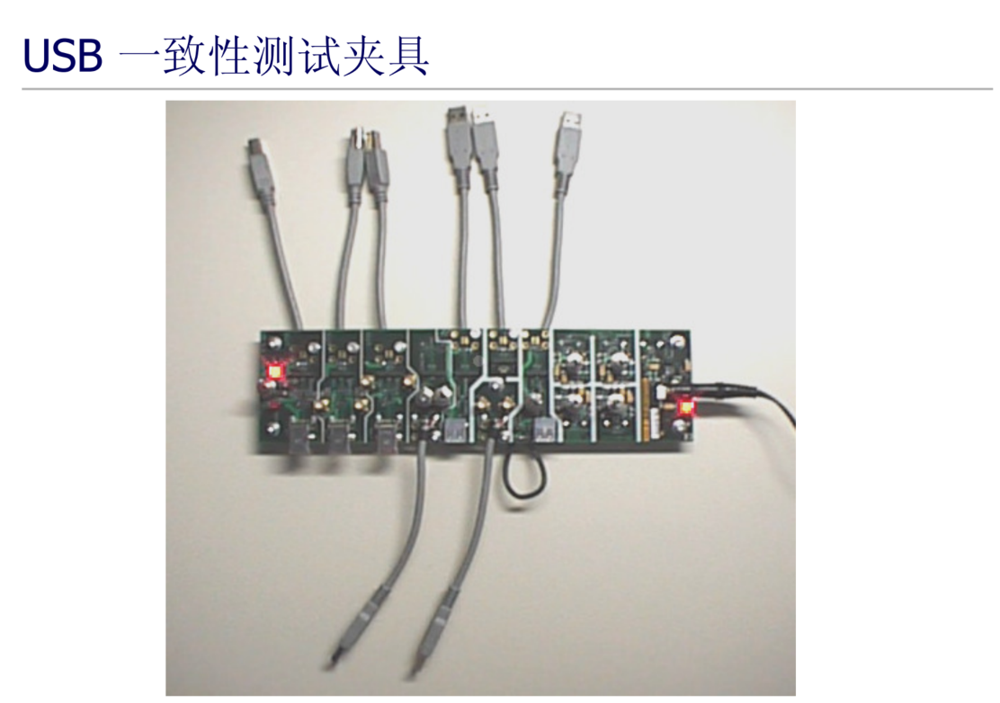

4.3.18.3. USB眼图测试
前言
示波器厂家都有相应眼图测试的文档, 指导, 配套夹具等。详细可结合示波器厂家文档进行信号测试。
本文主要是对x3m本身如何进入test mode, compliance mode等测试模式进行一些描述。
主要包含usb2.0主机, usb2.0设备, usb3.0主机, usb3.0设备 四个部分。
原理
usb2.0眼图测试原理
参考usb2.0协议 “7.1.20 Test Mode Support” 章节
即协议规定主机, hub, 设备控制器都需要支持Test_Mode, 并且其中一项Test Packet模式即包含眼图Pattern信号。
关于如何进出Test Mode
待测件为Device或者Hub
即对于device/hub等设备来说, 标准的SetFeature和SetPortFeature即需要支持测试模式. 详细可参考usb2.0协议 “9.4.9 Set Feature”

对于x3m做设备, 同样可以简单地通过相应寄存器控制进入Test Mode.
查看DWC_usb3_programming.pdf手册, “1.3.2 DCTL”章节, 可以通过bit[4:1]的TSTCTL位进行控制. 使进入Test_Packet模式.
待测件为主机
x3m使用的是dwc3控制器, 符合xhci协议. 参看xhci 1.2协议 “**5.4.9.2 USB2 Protocol PORTPMSC Definition **”章节. “Table 5-30: USB2 Port Power Management Status and Control Register Bit Definitions (PORTPMSC)”表格.
即可以通过usb2.0 PORTPMSC寄存器, 可以控制该端口进入测试模式. 其中Test Packet模式可以输出眼图pattern信号。
总结
usb2.0 device/hub/host眼图测试主要是进入协议规定的Test Mode的Test Packet模式.
设备端/hub可以通过上游主机/hub发送标准的SetFeature或SetPortFeature命令进入测试模式.
对于x3m可以直接操作dwc3 DCTL寄存器的TSTCTL位进行控制, 进入Test Packet模式.
主机端如果符合xhci协议, 可以通过usb2.0 PORTPMSC寄存器进入.
usb3.0眼图测试原理
参考usb3.0协议文档, “6.4.4 Compliance Pattern”等章节
usb3.0眼图测试主要是需要进入Compliance模式. 生成对应的Compliance Pattern信号. 信号详细时序见下图,
usb3.0信号测试包括Tx Compliance Test和Rx Compliance Test测试.
Tx相对简单, 拓补图如下：
即只要测试设备/主机 Tx打出来的Compliance Pattern信号就可以了.
Rx是接收方向信号, 故测试需要有信号生成器, 并形成一个回环模式进行测试. 拓补图如下:
即待测装置工作在loopback模式, 误码仪打对应的pattern, 并通过回环后的信号进行校验和检查, 判断信号质量和完整性.
根据立科的一些文档描述, 实际测试环境类似下图,
关于如何进出Compliance Mode
待测件为Device或Hub
参考usb3.0协议文档, “Figure 7-13”图示,
其中标准的一种设备进入Compliance模式的方式就是第一个LFPS.Polling超时进入.
故不使用命令行方式, 可以按照示波器操作指示, 使得设备进入Compliance测试模式.
当然x3m dwc3控制器也可以通过命令/寄存器方式进入Compliance模式.
参考dwc3手册, “1.3.2 DCTL”寄存器, bit [8: 5] ULSTCHNGREQ位. 只要设置为10即可以进入Compliance模式.
待测件为主机
x3m dwc3符合xhci协议, 参看xhci协议文档”5.4.8 Port Status and Control Register (PORTSC)”寄存器详情. Bit [8:5]位设置成10即控制对应端口进入Compliance模式.
关于如何进入Loopback模式
根据”7.5.4.7.2 Exit from Polling.Idle”章节描述, 以及相应图示, usb3.0控制器在link training的Polling.Configuration阶段, 如果监测到TS2 pattern中的Loopback bit位, 就会自动配置usb3.0 phy进入Loopback模式。
总结
usb3.0 device/hub/host眼图测试主要是进入协议规定的Compliance模式.
作为设备或Hub可以正确配置示波器软件, 使得第一个LFPS.Polling超时, 并进入Compliance模式.
或者直接可以通过DCTL寄存器的ULSTCHNGREQ使设备进入到Compliance模式. 针对usb3.0 Rx的信号测试, 需要使得装置进入Loopback模式, 并利用误码仪等设备进行信号质量测试和校验.
如果待测件是usb host, 则可以通过控制PORTSC寄存器的Port Link State位控制进入对应端口到Compliance模式.
故以下主要详细记录下各角色下如何进入对应眼图测试模式, 以及测试环境需求.
usb2.0 主机端
以泰克为例, 眼图/信号测试软件及夹具如下

泰克的usb2.0 host眼图测试连接方式
即如果待测器件为x86 PC usb2.0 host口, 则可利用HSElecticalTestTool等windows软件, 将对应主机端口切换到测试模式。
而对于x3m dwc3控制器来说, 无法运行类似软件.
可通过以下脚本使端口进入Test Packet模式.
#!/bin/sh export PATH=$PWD:$PATH # Reg Offset & bit-field USBCMD=0x0 PORTSC_HS=0x420 PORTPMSC_HS=0x424 PORTSC_SS=0x430 PORTPMSC_SS=0x434 GUSB3PIPECTL=0xC2c0 HCRST=[1:1] PLS=[8:5] PP=[9:9] HstPrtCmpl=[30:30] TestMode=[31:28] # switch to host mode in default echo host > /sys/devices/platform/soc/b2000000.usb/b2000000.dwc3/role # # Start to Reset & Enter Compliance mode # hbx3dbg.arm -w USB+$USBCMD $HCRST 1 usleep 1000 hbx3dbg.arm -r USB+$USBCMD $HCRST if [ $? -eq 0 ]; then hbx3dbg.arm -w USB+$PORTPMSC_HS $TestMode = 0 var=$(hbx3dbg.arm -r USB+$PORTPMSC_HS $TestMode) echo "reset port test mode: ${var:0-3}" hbx3dbg.arm -w USB+$PORTPMSC_HS $TestMode = 4 var=$(hbx3dbg.arm -r USB+$PORTPMSC_HS $TestMode) echo "set port test mode to: ${var:0-3}" else echo "Host Controller Reset Faill!!" fi
脚本和工具可以下面链接下载.
usb2_host_enter_test_packet.sh
hbx3dbg.arm
usb2.0 设备端
以泰克为例, 眼图/信号测试软件及夹具如下
即待测装置为设备, 可以通过上行win10 PC运行相应软件, 通过SetFeature标准命令将设备切换到Test Packet模式.
同时也可以通过命令行进行切换, 即DCTL寄存器的TSTCTL位进行控制.
sysfs系统中有现成的testmode文件节点可以控制:
cat /sys/kernel/debug/usb/b2000000.dwc3/testmode no test echo "test_packet" > /sys/kernel/debug/usb/b2000000.dwc3/testmode cat /sys/kernel/debug/usb/b2000000.dwc3/testmode test_packet
usb3.0 主机端
usb3.0信号完整性测试, 包含Tx Compliance Test和 Rx Compliance Test.
Rx测试环境和方法相对复杂, 先介绍Tx信号测试.
Tx Compliance Test
核心
通过PortSC寄存器控制待测端口进入Compliance模式.
夹具和环境

相关脚本
usb_enter_CP0.sh 进入CP0模式
# Reg Offset & bit-field USBCMD=0x0 PORTSC_HS=0x420 PORTSC_SS=0x430 GUSB3PIPECTL=0xC2c0 HCRST=[1:1] PLS=[8:5] PP=[9:9] HstPrtCmpl=[30:30] # # Start to Reset & Enter Compliance mode # hbx3dbg.arm -w USB+$USBCMD $HCRST 1 usleep 1000 hbx3dbg.arm -r USB+$USBCMD $HCRST if [ $? -eq 0 ]; then hbx3dbg.arm -w USB+$PORTSC_SS $PLS = 0xA hbx3dbg.arm -w USB+$PORTSC_SS $PP = 0x0 hbx3dbg.arm -w USB+$GUSB3PIPECTL $HstPrtCmpl = 1 else echo "Host Controller Reset Faill!!" fi
usb_next_CP.sh 控制进入Compliance Pattern模式
# Reg Offset & bit-field USBCMD=0x0 PORTSC_HS=0x420 PORTSC_SS=0x430 GUSB3PIPECTL=0xC2c0 HCRST=[1:1] PLS=[8:5] PP=[9:9] HstPrtCmpl=[30:30] # # Next Compliance mode # hbx3dbg.arm -r USB+$GUSB3PIPECTL $HstPrtCmpl if [ $? -eq 1 ]; then hbx3dbg.arm -w USB+$GUSB3PIPECTL $HstPrtCmpl = 0 usleep 1000 hbx3dbg.arm -w USB+$GUSB3PIPECTL $HstPrtCmpl = 1 else echo "USB is not in the Compliance mode, run usb_enter_CP0.sh first" fi
详细测试步骤请参考文档
Rx Compliance Test
usb3.0 Rx电气特性测试, 也可以称之为收容限测试(Rx Tolerance Compliance Test). 测试过程中, 不需要输入任何的测试命令, 只要搭建好测试环境, USB3.0 控制器在连接到测试仪器后, 会自动进入Loopback Mode, 开始进行Rx 测试. 由于USB3.0 Rx测试环境搭建比较复杂, 并且不同示波器, 测试步骤有所不同, 所以下文没有提供详细的Rx测试方法, 请参考测试示波器的操作说明.
本文简单介绍下进入Loopback Mode的原理, 以及确认进入Loopback mode的方法.
进入Loopback Mode的流程, 可参考章节2的原理部分或参考usb3.0协议. 具体操作得参考示波器的文档说明, 实际原理如下图,
即USB3.0控制器在link training的Polling.Configuration的阶段, 如果监测到TS2 Pattern中的bit位, 就会自动配置USB3.0 phy进入loopback模式。
判断进入Loopback mode的方法
参考xhci1.2协议, PORTSC寄存器 bit [8:5], Port Link State读取出来是11, 在usb3.0中即代表Loopback模式的含义.
具体测试环境和步骤可以参考对应仪器厂家的说明文档。
usb3.0 设备端
usb3.0设备端眼图/信号测试同样包括Tx, Rx两条通路的测试.
核心同样是需要进入对应的Compliance Test模式和Loopback回环测试模式.
dwc3设备端如何进入Compliance模式
通过示波器的设置, 使得link traning过程中LFPS.Polling过程超时, 待测装置就能自动进入Compliance测试模式.
直接控制dwc3 DCTL寄存器控制phy进入Compliance模式
Set DCTL.RUN_STOP = 0 DCTL. ULSTCHNGREQ = 10 Set DCTL.RUN_STOP = 1 # here the link should go to compliance mode Once in compliance , alternatively write DCTL. ULSTCHNGREQ = 0 & DCTL. ULSTCHNGREQ = 10 to enter into next compliance mode
同样可以利用/sys/kernel/debug/usb/b2000000.dwc3/link_state文件节点进行link state切换.
echo "Compliance" > /sys/kernel/debug/usb/b2000000.dwc3/link_state # 切状态到Compliance echo "Loopback" > /sys/kernel/debug/usb/b2000000.dwc3/link_state # 切状态到Loopback
注: 该强制方式得实际再验证下, 目前xj3 sdb/dvb板子试了不行.
同样, usb3.0做为设备, 测试Rx信号同样需要利用Loopback回环模式, 外部使用误码仪进行测试.